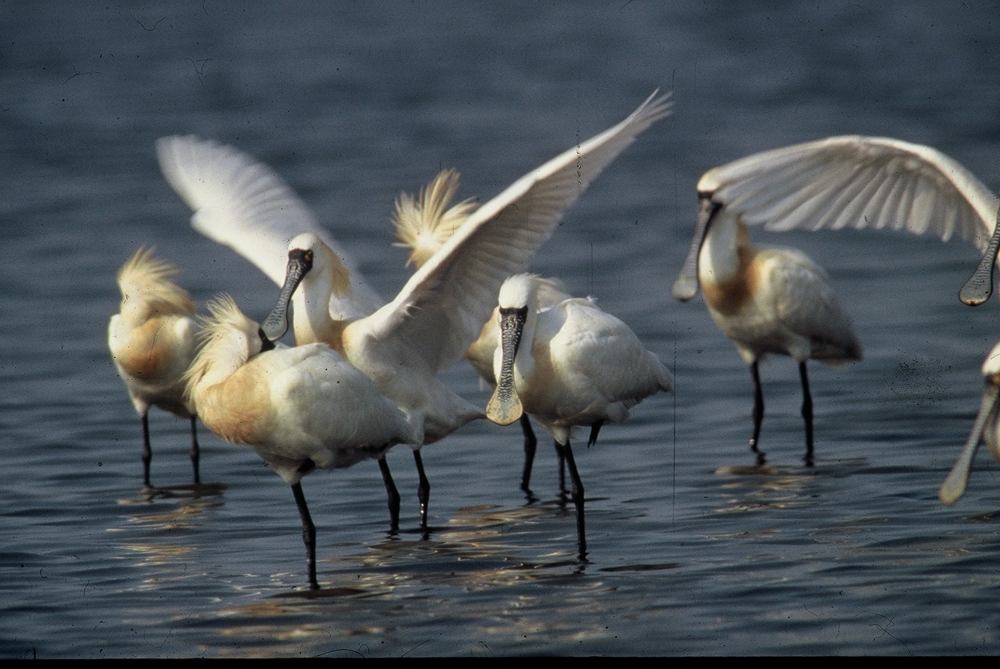

배우다
독특한 부리부터 계절에 따른 이동까지.
저어새의 삶을 이해합니다.
01 — OUR TEAM
저어새 보존을 위한 작은 시작갯벌 위의 작은 발자국이
다음 계절에도 이어질 수 있도록.
우리는 저어새를 배우고, 기록하고, 알립니다.

사진: Kristinvafranzi / Wikimedia Commons · CC BY-SA 3.0 · 화면에 맞게 잘라 표시
WHY WE STARTED
저어새를 지키는 일은
저어새가 살아가는 갯벌을 함께 지키는 일입니다.
이 프로젝트는 저어새의 생태와 서식지를 쉽게 이해하고, 관측 기록을 통해 자연을 더 가까이 살펴보기 위한 공간입니다.
팀 소개 초안입니다. 팀 이름, 구성원, 실제 활동 내용은 추후 추가할 예정입니다.
독특한 부리부터 계절에 따른 이동까지.
저어새의 삶을 이해합니다.
어디에서, 언제, 어떻게 살아가는지.
서식지와 관측 정보를 모읍니다.
우리가 발견한 이야기를 나누고,
보존의 필요성을 함께 생각합니다.